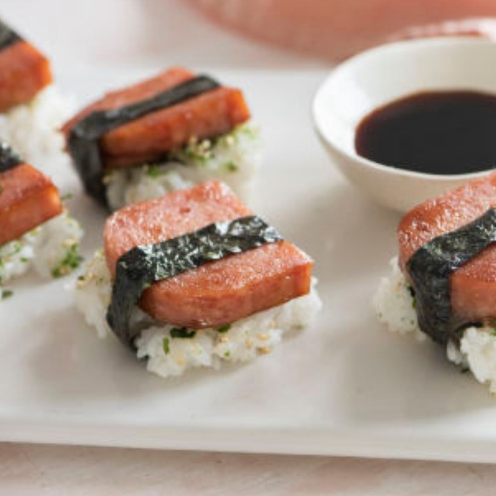

Spam Sushi

Image source
Description
Spam Musubi is a popular snack in Hawaii. It is a type of sushi that has marinated cooked spam in sushi.
Ingredients
- 2 cups uncooked short-grain white rice
- 2 cups water
- 6 tablespoons rice vinegar
- ¼ cup soy sauce
- ¼ cup oyster sauce
- ½ cup white sugar
- 1 (12 ounce) container fully cooked luncheon meat (e.g. Spam)
- 5 sheets sushi nori (dry seaweed)
- 2 tablespoons vegetable oil
Steps
- In a saucepan bring 2 cups water to a boil. Add rice and stir. Reduce heat, cover, and simmer for 20 minutes. Stir in
rice vinegar, and set aside to cool.
- In a separate bowl, stir together soy sauce, oyster sauce, and sugar until sugar is completely dissolved. Slice luncheon
meat lengthwise into 10 slices, or to desired thickness, and marinate in sauce for 5 minutes.
- Put the toasted slice between two fresh slices of bread
- In a large skillet, heat oil over medium high heat. Cook slices for 2 minutes per side, or until lightly browned. Cut
nori sheets in half and lay on a flat work surface. Place a rice press in the center of the sheet, and press rice
tightly inside. Top with a slice of luncheon meat, and remove press. Wrap nori around rice mold, sealing edges with a
small amount of water. (Rice may also be formed by hand in the shape of the meat slices, 1 inch thick.) Musubi may be
served warm or chilled.